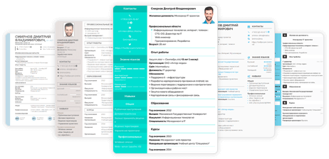

О нас
Примеры резюме
Блог
Как составить резюме
Редактировать резюме
Мои резюме
Настройки
Выход
Войти
Создать резюме
Основное меню
Как составить резюме
Примеры резюме
Блог
Шаблоны резюме
Генератор навыков
О нас
Контакты
Сотрудничество
Войти
Создать резюме
Блог
Примеры резюме
Секреты резюме
Карьера
Собеседование
примеры резюме по профессиям
Образцы резюме из различных сфер деятельности:

Выберите профессиональную область:
IT
Автобизнес
Административный персонал
Банки и инвестиции
Безопасность
Бухгалтерия и финансы
Госслужба
Гостиницы и рестораны
Маркетинг и PR
Медицина
Образование и воспитание
Обслуживание и ремонт
Право
Продажи
Производство и добыча сырья
Развлечения и искусство
Строительство
Топ-менеджмент
Транспорт и логистика
Управление персоналом
Фитнес, спорт и красота
IT
Android-разработчик
Backend-разработчик
CMM-специалист
Data scientist
Frontend-разработчик
IT специалист
Java разработчик
SEO-специалист
Веб-дизайнер
Веб-разработчик
Дизайнер мебели
Иллюстратор
Инженер-программист АСУ ТП
Интернет-маркетолог
Маркетолог
Оператор ПК
Программист
Программист 1C
Продакт-менеджер
Руководитель IT-отдела
Системный администратор
Системный аналитик
Специалист по информационной безопасности
Специалист по кибербезопасности
Специалист по контекстной рекламе
Специалист технической поддержки
Тестировщик
Управляющий бизнес аккаунтом
Фрилансер
Автобизнес
Автомеханик
Водитель
Водитель-экспедитор
Кредитный специалист
Личный водитель
Мастер-приемщик
Оператор АЗС
Продавец автозапчастей
Специалист по страхованию
Административный персонал
Event-менеджер
Администратор
Администратор магазина
Администратор медицинского центра
Администратор офиса
Администратор ресторана
Администратор салона красоты
Администратор фитнес-клуба
Архивариус
Бухгалтер
Директор ресторана
Документовед
Заведующий складом
Завхоз
Заместитель директора
Корректор
Оператор колл-центра
Оператор ПК
Переводчик
Помощник руководителя
Пресс-секретарь
Ревизор
Руководитель проектов
Секретарь
Секретарь-делопроизводитель
Секретарь-референт
Системный администратор
Специалист по закупкам 44 ФЗ
Старший продавец
Банки и инвестиции
Аналитик
Аудитор
Банковский работник
Кассир
Кредитный специалист
Начальник отдела кредитования
Переводчик
Специалист по страхованию
Финансовый директор
Экономист
Экономическая безопасность
Безопасность
Военнослужащий
Инженер по пожарной безопасности
Инкассатор
Начальник службы безопасности
Охранник
Пожарный
Полицейский
Ревизор
Сотрудник МЧС
Сотрудник службы безопасности
Спасатель
Специалист по информационной безопасности
Специалист по страхованию
Сторож
Судебный пристав-исполнитель
Телохранитель
Эколог
Экономическая безопасность
Бухгалтерия и финансы
Аналитик
Аудитор
Банковский работник
Бухгалтер
Бухгалтер бюджетного учреждения
Бухгалтер на первичную документацию
Бухгалтер-кассир
Главный бухгалтер
Заместитель главного бухгалтера
Инженер-сметчик
Инкассатор
Кассир
Кредитный специалист
Помощник бухгалтера
Специалист по закупкам
Специалист по закупкам 44 ФЗ
Тендерный специалист
Финансовый директор
Финансовый менеджер
Экономист
Госслужба
Архивариус
Бухгалтер бюджетного учреждения
Военнослужащий
Госслужащий
Кинолог
Метролог
Налоговый инспектор
Пожарный
Полицейский
Прокурор
Резюме в МФЦ
Секретарь
Сотрудник МЧС
Социолог
Специалист по закупкам
Таможенный специалист
Эколог
Гостиницы и рестораны
Администратор
Администратор гостиницы
Администратор ресторана
Бариста
Бармен
Гид-экскурсовод
Горничная
Директор ресторана
Кондитер
Консьерж
Менеджер по туризму
Официант
Пекарь
Переводчик
Повар
Повар-сушист
Сомелье
Технолог пищевого производства
Управляющий рестораном
Хостес
Шеф-повар
Маркетинг и PR
CMM-специалист
Event-менеджер
PR-менеджер
SEO-специалист
Бренд-менеджер
Веб-дизайнер
Дизайнер
Журналист
Интернет-маркетолог
Коммерческий директор
Макетчик
Маркетолог
Менеджер блогера
Менеджер по маркетингу
Менеджер по работе с маркетплейсами
Менеджер по рекламе
Писатель
Продакт-менеджер
Промоутер
Редактор
Резюме копирайтера
Специалист по контекстной рекламе
Таргетолог
Медицина
Администратор
Администратор медицинского центра
Акушер-гинеколог
Анестезиолог-реаниматолог
Ассистент стоматолога
Ветеринарный врач
Врач
Врач УЗИ
Врач-терапевт
Главный врач
Дерматовенеролог
Дефектолог
Зубной техник
Лаборант-химик
Логопед
Медицинский представитель
Медицинский работник
Медрегистратор
Медсестра
Микробиолог
Невролог
Ортодонт
Провизор
Психиатр
Психолог
Резюме массажиста
Санитарка
Социальный работник
Стоматолог
Стоматолог-ортопед
Фармацевт
Хирург
Эндокринолог
Образование и воспитание
Библиотекарь
Вожатый
Волонтер
Воспитатель
Детский психолог
Дефектолог
Заведующий детским садом
Лаборант-химик
Лингвист
Логопед
Младший воспитатель
Няня для ребенка
Педагог
Педагог по вокалу
Педагог-организатор
Педагог-психолог
Преподаватель
Психолог
Репетитор
Социальный педагог
Социальный работник
Тьютор
Учитель
Учитель английского языка
Учитель биологии
Учитель географии
Учитель информатики
Учитель истории и обществознания
Учитель математики
Учитель музыки
Учитель начальных классов
Учитель русского языка и литературы
Учитель физической культуры
Учитель химии
Хореограф
Обслуживание и ремонт
Автомеханик
Дизайнер
Дизайнер мебели
Домработница
Инженер-технолог
Инженер-энергетик
Клинер
Курьер
Метролог
Механик
Промышленный альпинист
Резюме в МФЦ
Реставратор
Садовник
Сварщик
Слесарь КИПиА
Слесарь механосборочных работ
Строитель
Фрилансер
Электрик
Электрогазосварщик
Право
Адвокат
Андеррайтер
Помощник юриста
Прокурор
Специалист по договорной работе
Судебный пристав-исполнитель
Судья
Продажи
PR-менеджер
Администратор магазина
Директор магазина
Диспетчер
Кладовщик
Кредитный специалист
Медицинский представитель
Менеджер
Менеджер по закупкам
Менеджер по недвижимости
Менеджер по работе с клиентами
Менеджер по рекламе
Менеджер по туризму
Мерчендайзер
Начальник отдела продаж
Оператор колл-центра
Оценщик
Продавец
Продавец автозапчастей
Продавец-консультант
Промоутер
Ревизор
Специалист по закупкам
Старший продавец
Супервайзер
Товаровед
Топ-менеджер
Торговый представитель
Управляющий магазином
Производство и добыча сырья
Агроном
Аппаратчик
Бурильщик
Вахтовик
Главный технолог
Закройщик
Инженер по качеству
Инженер-программист АСУ ТП
Инженер-технолог
Контролёр ОТК
Лаборант-химик
Маркшейдер
Мастер производственного участка
Мастер СМР
Машинист бульдозера
Машинист буровой установки
Механик
Микробиолог
Наладчик
Начальник лаборатории
Начальник производства
Начальник цеха
Нефтяник
Оператор котельной
Оператор станка
Печатник
Плотник
Портной
Сборщик мебели
Слесарь механосборочных работ
Технический писатель
Технолог
Технолог пищевого производства
Тракторист
Шахтёр
Электрик
Ювелир
Развлечения и искусство
Актёр
Аниматор
Арт-директор
Библиотекарь
Видеооператор
Волонтер
Гид-экскурсовод
Декоратор
Диджей
Дизайнер
Журналист
Звукорежиссёр
Макетчик
Менеджер по туризму
Писатель
Продюсер
Редактор
Режиссер
Сценарист
Танцор
Телеведущий
Фотограф
Художник
Строительство
Архитектор
Бетонщик
Бригадир
Бурильщик
Вахтовик
Геодезист
Директор строительной компании
Дорожный мастер
Инженер по качеству
Инженер по эксплуатации
Инженер ПТО
Инженер-проектировщик
Инженер-сметчик
Инженер-энергетик
Каменщик
Машинист бульдозера
Машинист крана
Машинист экскаватора
Менеджер по недвижимости
Монтажник окон
Монтажник слаботочных систем
Монтажник трубопроводов
Монтажника вентиляции
Начальник строительного участка
Промышленный альпинист
Прораб
Сварщик
Строитель
Стропальщик
Штукатур-маляр
Электрик
Электрогазосварщик
Топ-менеджмент
Андеррайтер
Арт-директор
Бизнес-аналитик
Директор магазина
Директор строительной компании
Исполнительный директор
Коммерческий директор
Контрактный управляющий
Менеджер
Менеджер по развитию
Региональный менеджер
Руководитель
Руководитель IT-отдела
Тендерный специалист
Технический директор
Топ-менеджер
Финансовый директор
Финансовый менеджер
Транспорт и логистика
Автомеханик
Бортпроводник
Водитель
Водитель-экспедитор
Дальнобойщик
Директор по логистике
Диспетчер
Диспетчер по транспорту
Заведующий складом
Инкассатор
Кладовщик
Курьер
Личный водитель
Логист
Менеджер по закупкам
Моряк
Пилот
Проводник
Ревизор
Снабженец
Таможенный специалист
Управление персоналом
Администратор
Администратор магазина
Бизнес-аналитик
Бизнес-тренер
Заместитель директора
Менеджер
Менеджер по персоналу
Начальник отдела кадров
Региональный менеджер
Руководитель
Фитнес, спорт и красота
Администратор
Администратор салона красоты
Администратор фитнес-клуба
Барбер
Бровист
Визажист
Грумер
Косметолог-эстетист
Мастер маникюра и педикюра
Модель
Модельер
Парикмахер-универсал
Резюме массажиста
Стилист
Танцор
Тренер тренажерного зала
Управляющий салоном красоты
Фитнес-тренер
Футболист
Хореограф
Вход
Регистрация
Для входа введите учетные данные:
Забыли свой пароль?
Войти
Для восстановления пароля введи свой email:
Вернуться назад
Продолжить
Для восстановления пароля введи свой email:
На ваш почтовый ящик отправлено письмо для восстановления пароля
Продолжить
или
Войти с помощью аккаунта соц.сети:
Для регистрации введите данные:
Согласие с
условиями обработки персональных данных
Зарегистрироваться
или
Войти с помощью аккаунта соц.сети:
Мы используем файлы cookie. Продолжив работу с сайтом, вы принимаете
Соглашение об обработке персональных данных
Ежедневные подборки вакансий в телеграм
Подписаться